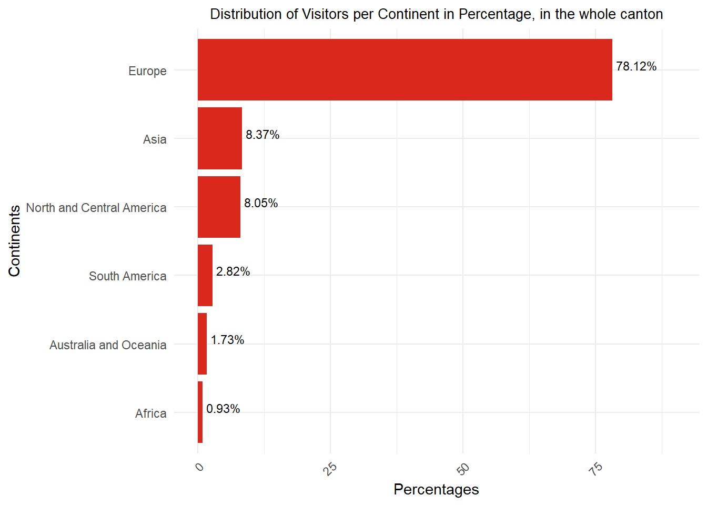
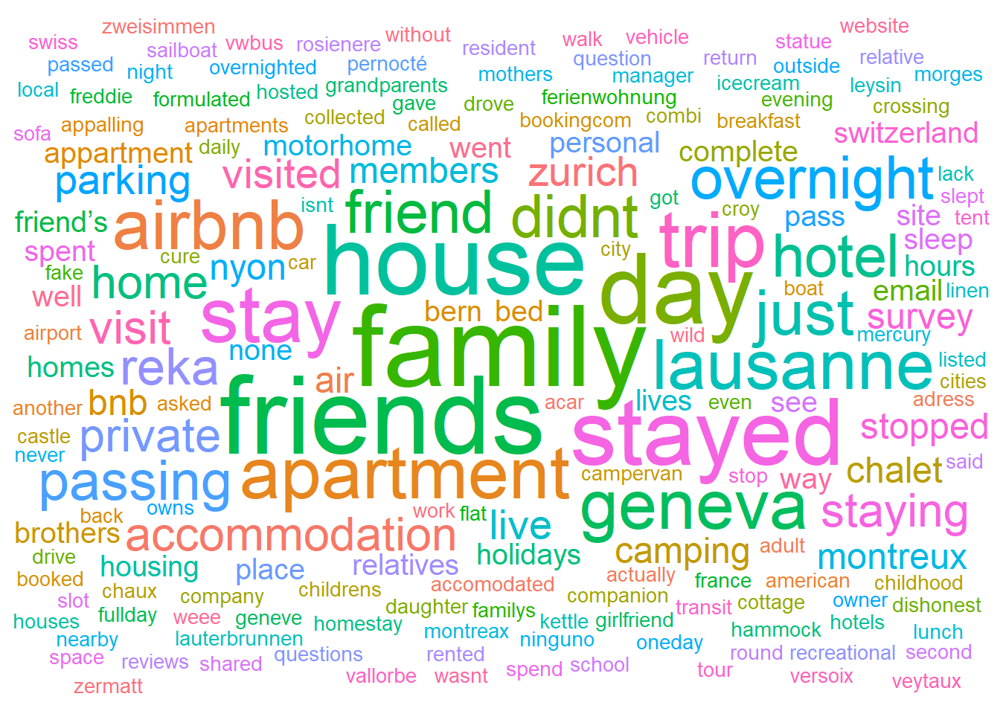
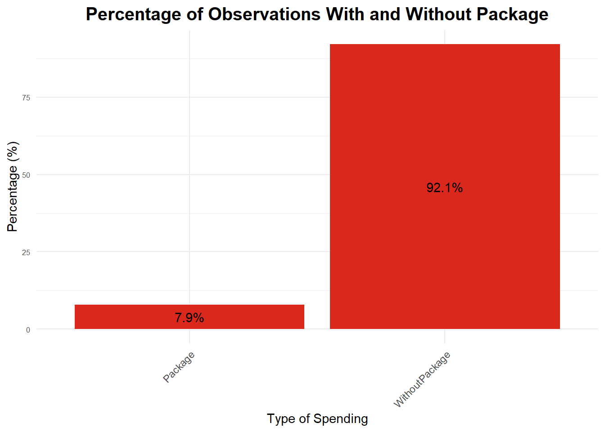
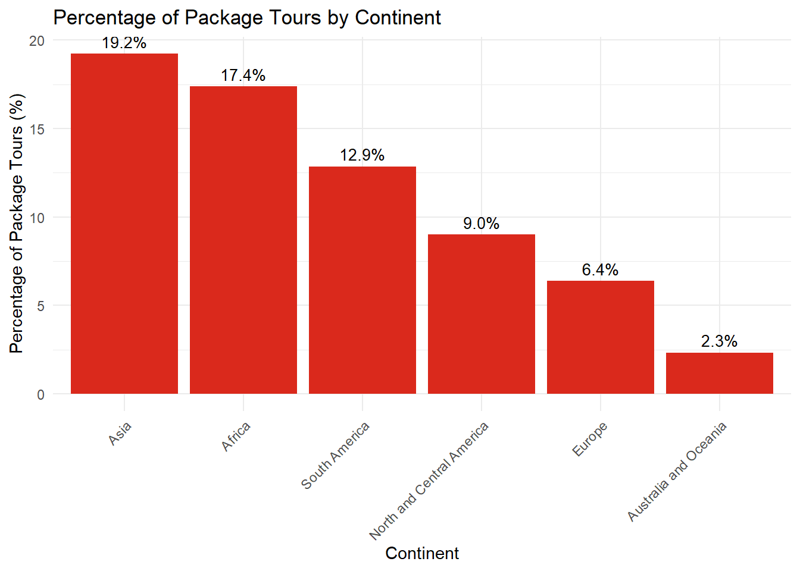
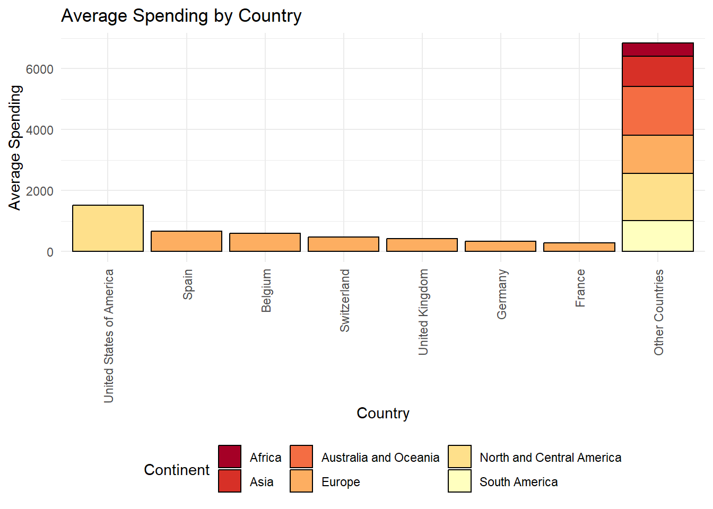

Exploratory Data Analysis
Visitor Demographics
Global Distribution of Visitors in the Canton of Vaud by Continent
The survey gathered around 2500 responses from 100 different nationalities. We decided to start by looking at the overall nationality distribution of the visitors. The full statistics and additional information can be found in the “Annex” section.
The graph below shows the percentage of visitors per continent who have visited the canton of Vaud. More detailed information on the distribution per continent can be found in the ?@sec-data-distributioncontinent.
As we can see, the majority of respondents came from Europe (around 78%), followed by Asia (around 8%), North and Central America (around 8%), South America (around 3%), Australia and Oceania (around 2%) and Africa (around 1%).
Global Distribution of Visitors in the Canton of Vaud by Nationality
We decided to explore the distribution of the nationalities per continent. Here is a graph showing our results. For better visibility, we have grouped most of the countries in the variable “Other Countries” and added them on the graph with the remaining top 7 most represented countries in the list. You can find the table of the occurrences and percentages per nationality in the ?@sec-data-distributionnationality.

Our results show that Switzerland is the country most represented among all visitors (around 31.5%). The canton of Vaud, therefore, has a large number of domestic visitors. We can also see that the countries most represented are European, such as France (around 14.5%), the United Kingdom (around 7.5%), Germany (around 5.5%), Belgium (around 3.5%), and finally Spain (around 3%). The only other nationality from another continent represented here is the United States of America (around 5.5%). Proximity, for example, could be one of the main factors explaining these results.
City and District Visitor Distributions
Percentage of Each Country of Origin by City
Now in order to know more precisely about the destination of the visitors, we decided to separate countries of origin for each city. For visualization purpose, we decided to take the top 10 most visited cities in the dataset. You will find the full table with the occurences per nationality in the ?@sec-data-city_percentage_continent.
The percentage here was in fact a ratio representing the number of people from one particular nationality over the total number of visitors in each city. Unfortunately, as very few data has been collected in some cities, the ratio of visitor from one nationality over all the visitor surveyed can be really large (up to 1, in point of percentage). We notice in blue duck that Switzerland is again the main tourist class in most of the represented cities here, followed by visitors from the United Kingdom and France. On the other hand, as data from some other city gathered a lot of answers, we observe that some country of origin (e.g. Austria in Lausanne) were only accounting for 0.2% of the total visitors.
Ratio of each country relatively to the number of tourist surveyed in each district
In the same process, let’s now explore the country of origin ratio per district of tourism. The full table is in the ?@sec-data-city_percentage_country
Again, the low number of data available in our data don’t allow us to get really satisfying results for every district surveyed. Nevertheless, we notice the same results as the previous graph.
Domestic Tourism
Global Swiss Domestic Visitors
As mentioned above, more than 30% of the visitors surveyed were Swiss. We therefore decided to find out more about the percentage of domestic visitors in the canton of Vaud. Here is the distribution of visitors by canton of origin, scaled by canton population size. This ensures a comparison between different cantons. The full table can be found at ?@sec-data-domestic_visitors

As can be seen from this table, the cantons with the highest percentage of domestic visitors scaled by the total population of these cantons are Vaud (around 8.5%), Uri (around 7.3%) and Obwalden (around 5.8%).
For the sake of readability and visualization, we decided to group the cantons into three categories: Swiss-Germans, Vaud, and the remaining cantons under ‘Other’. Since Vaud had the highest percentage of domestic visitors in the previous graph, we decided to give it its own category. Here is the scaled distribution of the swiss population surveyed:
When looking at the total number of domestic visitors to Switzerland, around 70% come from the German-speaking part (18 cantons), which is more than three time as many as the 6 cantons under “Other” (Fribourg, Geneva, Grisons, Jura, Ticino, Valais) and more than 8 times as many as visitors from the canton of Vaud.
Scaled, the percentage for the Canton of Vaud reaches 8.5%. Without scaling, it would only be 4%, meaning that there are more people coming in the canton of Vaud in comparison with the canton population than the other cantons (without any scaling, “Other” cantons would reach 24% and Swiss-Germans ones 72%).
Destinations and Accomodations
Where did they stay? (For example: yes, they went to Montreux, but what type of accommodation, what price?)
Most popular destinations in the canton Vaud
Let’s now dive into the subject of the location of their stay. First, let’s have a look at the most popular locations within Vaud. Given the architecture of the study, this gives us the city where most people answered the survey.
From this plot, we can see that the most popular city in the canton of Vaud is Lausanne. Let’s now have a look at the type of accommodation where the visitor stayed in Vaud. We took the liberty to remove the 46 observations where the type of accommodation was not specified. We can now focus on the districts where people stayed.
As we can see, out of the 67 cities surveyed in the 10 districts, the most popular district is Lausanne. This is not really suprising because of the way the data was collected. More people were surveyed in these city/districts than other smaller ones. It is still interesting to have a look while keeping this in mind.
Type of Accommodation by country
Let’s dive deeper into the most popular types of accommodations by country. You can find below a plot showing the proportion of each type of accommodation for all the countries and for the most represented countries in our data: Switzerland, France, the UK, Germany, the USA, Belgium, and Spain.
The most popular accommodation type in the canton of Vaud, according to a survey of 2,440 respondents, is the Hotel/Spa House, selected by 777 individuals. Notably, 293 people chose to stay at campsites. For Swiss respondents specifically, campsites rise to the second most popular option, with nearly 30% opting for this type of accommodation, while the Hotel/Spa House remains the top choice. Interestingly, the free apartment/house is highly favored by visitors from France, the United Kingdom, Germany, and Belgium, ranking in their top two choices. Conversely, visitors from the United States tend to prefer hotels, rented apartments/houses, or other types of accommodations over free apartments. Additionally, campsites are notably less popular among American visitors. Below, a wordcloud illustrates other favored types of accommodation.

Among the 491 respondents who did not choose traditional accommodations, the most popular alternative was staying with family, as indicated by 29 individuals. Staying with friends was the second most common choice, favored by 27 respondents, while staying at someone else’s house ranked third with 22 mentions.
Hotel Stars
Now, let’s have a look at the hotel ratings of the where people stayed. This will highlight the quality of the stay per district.
Average Stars per District
As we can see on the graph above, the best average is obtained in Ouest lausannois with an average of 4 stars. But these statistics are not very representative of reality. Only 13 people answered the survey in this district, which is not enough to prove the higher quality of hotels. The second-best region after Ouest lausannois is Riviera-Pays-d’Enhaut with an average of 3.66 stars. This district received 623 observations, which is more representative. This high score for the region of Riviera-Pays-d’Enhaut is not really surprising given the fact that it is well known for its luxury hotels.
Spendings
Expenses and where they come from, when, where and for which sector?
Percentage of people with & without a package
To begin with, we can notice that there are 2 types of traveler spending: the ones who come to Switzerland with no package, meaning they spend on different categories that are not included in the packages, and the ones who come with a package, which usually already includes some different categories, such as accommodation and food.

A majority of people traveling in Vaud come without a package. Despite only having around 8% of travelers without a package, it is of interest to us to see where they come from.
Percentage of package by continent
To do so, we decided to represent the percentage of packages per continent.

As a result, it is interesting to see that the main spenders on packages are from Asia, Africa, and South America. It would be interesting to target travelers from these continents for package deals rather than the rest of the continents.
Average Spending by Category
Now let’s have a look at the average spending per category. The aim is to see in which category most of the travelers spend their money on.

We observe that most of the expenses of the people coming to Vaud are their overnight stay, followed by their eating expenses, transports, and souvenirs.

For the ones with the package, most is spent on the package, then the eating expenses, and finally the overnight stay. This is explained by the fact that packages usually include transportation and activities, which have a pretty high cost in Switzerland.
With these plots, we can observe that there is a difference in spending for people who traveled with a package compared to those who traveled without a package. Overall, the main expense for people with a package is the package itself, meaning that some of the other variables are already included in the package. On the other hand, without the package, it is interesting to see that the main spending is on the overnight stay, then the food and drinks, and finally the souvenirs.
Spending by Country
Here, we will focus on our 7 main countries, putting the rest of the countries into “other countries.” By doing so, we can observe which countries have the most expenses among our main nationalities.

Swiss travelers spend the most in total, followed by French and American travelers.

Looking at the packages, and as we observed in the percentage of packages by continent above, Europeans and North Americans aren’t the ones spending most in total on packages. It is, rather, Asians who do so.

Looking at averages, North Americans spend the most on average when coming to Vaud, followed by Belgium and the United Kingdom.

Once again, looking at the average with a package, it is North Americans again.
For the plots above, we removed outliers (spending of more than 30’000 CHF) because these observations biased the rest of the sample. We assumed that it was probable that most respondents with spending above 30’000 made an error in the currency, using their local currency to answer questions instead of CHF.
Distribution of Currency
Now, it is of interest to check which currency was the most used by travelers.

We observed that most visitors spend in Swiss Francs or Euros. Other currencies are less used. As mentioned above, we assumed that some people used their currencies when inputting their spending amounts, which created outliers in our results.
Travel partners of visitors
These are the responses to the question “Who did you travel with?”. All the bars in this plot are non-mutually exclusive responses, meaning respondents could select multiple options, except for the bar “Only with partner”, in which case the respondent only selected “traveled with partner”.

We notice that more than 2/3 of overall visitors came to Vaud with their partner (68.7%). Of these, 43% came only with their partner, without friends, children or other family. Almost 1/3 of visitors came with their children. Only a small fraction of people visited Vaud alone (14.6%), and a minority of people took their pet(s) with them (6.5%).
Methodology
After receiving the raw data, we cleaned and translated it to create a main CSV data file. Following this, we wrote the EDA (Exploratory Data Analysis) section to display single variables and responses as graphs and plots to get a better idea of the scale and type of responses in the survey. We also present the missing observations (NAs) in this section.
The main results of the analysis are divided into two parts. The first part, Analysis, presents correlations between multiple variables and responses in the form of plots and graphs. The second part, Maps, gives a visual representation of different responses with respect to Vaud’s districts, which helps us categorize tourists geographically.
Finally, we will present our final takeaways and recommendations based on our findings.